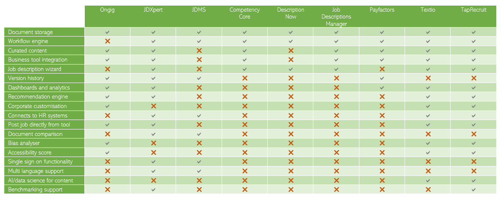

Overview
Topic
InRecruit is a software platform that will be used by
organisations to improve the overall quality, consistency,
and inclusivity of the job descriptions they use to attract
new talent. The program will be used by HR teams, hiring
managers, talent acquisition, and anyone involved in a
company’s hiring process. InRecruit will provide them with
an easy to navigate interface, built-in curated job
description libraries, critically it will offer
recommendations for improvement, identity potential bias,
and help organisations track and improve the inclusiveness
of their job descriptions.
When looking to hire new staff, rarely will an organisation
deliberately set out to exclude entire groups within the
population. In fact, in the last five years, there has been
an increasing focus globally on diversity and inclusion in
the workplace. Market leaders across the IT industry have
added Chief Diversity Officers and Managers to their teams
including Google, Facebook, Twitter, Microsoft, Dropbox,
Salesforce, and Airbnb (TechRepublic, 2016). Studies by
both Forbes and Harvard Business School reinforce the
benefits of diversity on both the innovation and financial
performance of organisations.
Competition for talent is fierce in today’s global economy,
so companies need to have plans in place to recruit,
develop, and retain a diverse workforce. (Forbes, 2011)
Understanding how to be inclusive when writing a job
description and applying that consistently across an
organisation is the challenge faced by most companies.
InRecruit will help organisations in their quest to attract
diverse talent by simplifying this critical part of the
hiring process.
Bridging the gap between recruiters and candidates,
InRecruit offers employers a tool to help quickly and
easily build inclusive job descriptions, optimised to
attract the broadest range of potential candidates to the
organisation. With a simple to use interface, recruiters
can select from pre-defined fields and the tool populates
an inclusive job description, provides suggestions and
recommendations on how to improve your job description, and
supports approval workflows and automatic job posting.
Based on current best practice, whilst removing as much
bias as possible from the process, InRecruit reduces the
workload of managers, human resources (HR), and talent
acquisition teams. Utilising industry standards,
organisational preferences and data gathered through the
application process the software further refines and
learns, to remain relevant over time.
There are lots of tools available in the market that assist
with building static job descriptions. What makes InRecruit
different is that it has inclusivity built-in, end to end,
helping organisations stand out in competitive markets, and
enabling them to attract a broader range of candidates. The
area of inclusive hiring has had a lot written about it,
but in terms of tools to support organisations, there are
very few available. When it comes to key features such as
analytics, benchmarking, market-specific insights, and
on-demand training, there are no applications that can
deliver all these features, as well as support inclusive
features such as keyword screening, bias analytics, and
recommendations.
Motivation
Why does diversity matter to an organisation? Research
published by McKinsey shows that diversity has a direct
correlation to financial results.
"Companies in the top quartile for racial and ethnic
diversity are 35 percent more likely to have financial
returns above their respective national industry medians.
Companies in the top quartile for gender diversity are 15
percent more likely to have financial returns above their
respective national industry medians". (McKinsey, 2015)
Forbes found that diversity in an organisation was critical
to global success, as well as improving innovation within a
company. With financial gains on the line, there is a great
incentive for organisations to be genuinely focused on
increasing diversity. Hiring diverse talent is not that
simple though. One of the big challenges in attracting
diverse talent to an organisation is known as
self-screening. Self-screening is where a candidate reads a
job advertisement and decides that they do not meet the
stated criteria, education, or experience requirements and
therefore do not apply for the role – never allowing the
employer to review the candidate. This act of
self-screening is much more prominent in women than it is
in men. Research by information technology company Hewlett
Packard, revealed women will not apply for an advertised
job role unless they believe they meet 100% of the listed
criteria, whereas men will apply when they meet around 60%.
The inclusion of extraneous or over-inflated job
requirements is costing employers their candidates.
To address this, organisations must utilise inclusive
hiring methods and standards. Job descriptions are the
initial window of insight into organisations and an oft
lost opportunity to not only find the right candidate for
the role but display the business’s culture. Describing the
requirements of the position is the point at which
companies are unknowingly disconnecting with potential
future employees. What is said and how it is worded is
critical when competing for talent. In 2019 Harvard
Business Review researched why women do not apply for
roles. Their research identifies narrow job descriptions,
non-inclusive language, and culture as critical factors
that are deterring women from applying for jobs. A job
description can seem like such a simple thing to change,
but the impact it can have on hiring responses is
significant. As discussed, there has been a lot of research
in this area around inclusive hiring, but to date, no
simple IT solutions for employers to implement to aid them
in doing this better.
Effectively improving diversity within talent pipelines is
as simple as tweaking relevant job descriptions. The
challenge employers face is knowing which information needs
changing, what elements are important, and building those
elements into a compelling, engaging, and realistic job
narrative. Most managers find themselves time-poor and the
recruitment function in many organisations is stretched
across multiple roles, offshored, or using a company
standard that has existed for many years. The simple act of
including a non-essential degree requirement, or specifying
that the job requires extensive travel, when in fact it is
not an excessive element of the role, are just two examples
of negative descriptors organisations add to their job
requirements daily, without realising the proportion of
candidates they have unintentionally excluded.
The talent pool for female candidates in STEM areas such as
IT is already small. A 2019 research report by CUPA HR
shows that in the US, only 26% of students undertaking
mathematical and computing studies at College are female.
When you add factors such as ethnicity, the percentages are
tiny. In Australia, the Australian Bureau of Statistics
(2020) has almost identical figures for the percentages of
women engaged in IT studies.
"Around 445,100 people were studying science, technology,
engineering, or mathematics (STEM) fields in 2020, with 72%
of these students being men". (ABS, 2020)

When the talent pool is already small, every candidate
counts. Building a software platform to enable users to
rapidly build highly inclusive job descriptions will
immediately increase the number of candidates applying for
roles and give organisations greater reach and diversity
within the applicant pool.
The concept behind InRecruit is well aligned to current IT
trends in a number of ways. Firstly, IT is one of the
industries where the conversation around diversity and
inclusion has really grown over recent years. As mentioned
in the Topic section above, technical industry leaders
worldwide have seen this trend and added Diversity Officers
and Managers to their workforces. This shows that the
subject matter of our project is well aligned to the IT
industry itself. The second facet of the alignment is the
platform we are proposing. The InRecruit platform has been
designed with consideration for the latest trends in IT,
using these as key elements or enablers for the platform.
For example, the platform will make use of chatbots, AI,
cloud based services and interfaces designed to support a
mobile workforce. These elements demonstrate our knowledge
of the technologies available in the market, as well as how
to bring them together into a cohesive end user experience.
The development of InRecruit would show a potential
employer our understanding of the challenges the industry
faces in terms of attracting key talent, as well as our
ability to identify and appropriately utilise modern
technologies to address those challenges.
Landscape
To understand whether InRecruit has market plausibility a
comparison of competitors that are already active within
the market needed to be undertaken. Research was conducted
into the top nine applications and software packages that
are currently available in the market that provide
capabilities around building job descriptions.
The table below shows the competitors, as well as the
categories they were assessed against and where they have
strengths.
Categories weren’t predetermined, they were added as the
team assessed each application, removing bias from the
assessment process. If the team had assessed these against
a predetermined list, it would be easy to show our own
application as being completely new and innovative.
Instead, as the team found a new application, its key
features were added to the assessment table.

Our assessment showed six key features that either are not
available in existing applications, or only available in a
small number of applications. These features are:
-
Bias analysis and accessibility scoring (three
applications have this functionality)
-
The use of AI and data science to curate content and
make recommendations (two applications have this
functionality)
-
Benchmarking (two applications have this functionality)
-
On demand accessibility training (no applications have
this functionality)
-
Market specific job descriptions (no applications have
this functionality)
-
Chatbot guidance (no applications have this
functionality)
We have taken the core features held by the majority of the
competitor applications or programs and identified these as
core to InRecruit. We have then taken the less common
features that focus on bias and recommendations to help
InRecruit align to this niche within the recruitment tool
market. Finally, we have looked at what would improve a
user experience, or provide a greater market edge to users
of InRecruit and identified three key features that form
part of our platform. These are all covered in greater
detail in the Scope and Limits section below.
Detailed Description
Aim
The aim of InRecruit is to deliver a software platform that
enables organisations to easily create, save, and share
highly inclusive job descriptions. InRecruit will be used
by organisations who are looking to improve the diversity
of their workforce, and therefore benefit from the creative
and financial benefits of a diverse workforce.
Using a combination of organisational requirements, in
concert with current research in the field of inclusion,
employers will have at their fingertips a tool that can
create custom job descriptions, optimised to attract
diverse talent to the organisation. InRecruit aims to take
the guess work out of inclusive hiring and assist in
creating a consistent hiring experience for candidates,
whether the organisation is 10 people or 100,000 people.
By solving the challenges inherent in creating an unbiased
job description, InRecruit will help organisations add
greater diversity to their workforce, and therefore
increase their potential for profitability.
Goals
To help drive towards the overarching aim, InRecruit has a
number of goals.
-
Simple to use interface to enable the introduction of
diverse job descriptions into any workplace. Being
inclusive isn’t always easy, and often people end up
ignoring it. This is not because they want to be
deliberately exclusive, but because they don’t know
where to start. The goal of InRecruit is to remove this
blocker by taking away the unknown of where to start. A
simple, user friendly interface means that anyone in the
organisation can easily access the tool and start
building inclusive job descriptions.
-
Search functionality that is intuitive and returns
relevant templates or recommendations. Having made a
start, finding what you need easily is critical. If it
takes too long or is hard to find what you are looking
for, you have lost your audience. InRecruit aims to have
an intuitive search interface that utilises predictive
text, as well as making use of machine learning to help
it better understand what the organisation tends to look
for, the industry it operates in and therefore make
better recommendations.
-
Recommendations that are actionable, easy to understand
and improve the quality of the candidates an
organisation sees. Having a database and being able to
search it are important, but the crux of the InRecruit
functionality is its ability to make recommendations on
ways to edit or alter job descriptions to improve their
appeal. The ultimate goal of this is to increase the
breadth and quality of candidates that an organisation
sees applying for its jobs. The recommendation engine
needs to be carefully tuned to make sure that it isn’t
bringing in new biases and that any changes that are
recommended are easy for the user to accept.
-
Integration that makes it simple to seek approval and
release a job description. Having written a new job
description, you don’t want users to be taking their
content offline in order to get approvals, or to release
it to market. If they were to do this, it would reduce
the ability of the tool to both learn from and report on
progress. That is why integration across workflows and
job seeker platforms is a critical goal for the
platform.
Plan and Progress
The planning for InRecruit has been an iterative process.
From the first inception of the idea, to the detail the
team has built out, we have moved through a number of
phases and development milestones. These are covered in
more detail below.
Ideation
To get us started, we undertook a phase of ideation. The
purpose of going through an ideation activity was to get
the team to provide their unfiltered thoughts and ideas
around the proposed project, gain a deeper understanding of
the proposal and test whether we felt it was achievable or
not. The high-level concept of the platform was shared with
the team as a whole and everyone contributed ideas, or
relayed their understanding of what it was designed to
achieve. This helped to highlight gaps in the concept, as
well as solidify our understanding of what it was we were
seeking to achieve. Out of the ideation phase we developed
a series of ideas of what the platform could potentially be
used for and features it could have. Most of these features
have been retained in the scoped as we have moved through
iterations. There were some features we discussed, but did
not move forward with. These include:
-
The ability for candidates to upload their CVs to see if
they were a match for the job. It was felt that this was
outside of the core goals and aim for the project. The
main audience for the product is recruiters, and so
although this could be a feature for future iterations,
it wasn’t included in the project scope at this stage.
-
Load and analyse all of an organisation’s existing job
descriptions. Loading existing job descriptions is a
feature that is available within the tool, but analysing
them immediately for inclusiveness hasn’t been built in
explicitly as part of the current scope. During
discussions within the team it was felt that this kind
of analysis could be misleading. If there are duplicate
job descriptions or ones for roles that require lots of
travel, where most roles don’t, these figures would skew
any statistics. It was decided that to build a baseline
score of inclusivity, the system would take the new job
descriptions as they were created. This means each one
assessed is a discrete role, where recommendations have
been made and users have made choices around whether to
incorporate the recommendations or not. This gives an
organisation a better benchmark, also showing it
opportunities for improvement and reducing the ability
to discount the statistics provided as being old, or
unrepresentative.
-
Cognitive services for document translation. One concept
we toyed with was the ability to use cognitive services
to support document translation. The team were exploring
ways of making the tool support multi-national
organisations. This is a good feature for future
potential iterations, but would require a significant
amount of investigation as inclusivity is different
across cultures and auto-translation could create
inconsistencies or erroneous recommendations.
-
Build approach. In original iterations, we were
exploring and proposing two different ways of building
the platform. One was a custom build, the other using
existing software that could be linked together using
APIs and workflows. Although we haven’t definitively
ruled out the custom build approach, given a number of
the included scope covers features such as chatbots and
machine learning capabilities, our research is leaning
towards the use of a platform such as Azure or AWS,
where our development team could leverage built in
capabilities such as bot builders and pre-defined
algorithms to reduce the build cost. There are pros and
cons to both models of course. In the model where we
leverage existing cloud provider capabilities, it means
we are tied to a particular platform in order to provide
our service. This also has cost implications as we will
be paying to host the service, regardless of whether it
is being used. Building a standalone application makes
it platform agnostic to a certain extent, but means that
there are a lot more initial upfront costs to build key
capabilities.
Consolidation, competition, personas and a pivot
Having brainstormed ideas of what features the platform
needed to have, these were consolidated into a core list.
To help us work out the technical and functional
requirements for the platform we decided to create a set of
personas and associated user stories. This level of detail
was to help us really align and consolidate the core goals
of the platform. The three core personas we created to aid
our user story creation were:
-
Business owner – the business owner would be interested
in insights from the tool, payback metrics and ways of
proving the value of the cost of investments. Most of
the user stories for this persona related to tracking,
monitoring, dashboards and value realisation.
-
Hiring director/approver – this persona was for those
people in an organisation who were responsible for the
HR function, onboarding new people, and approving any
workflows related to releasing a new role to market. In
some organisations, this could be one person, or in
larger organisations, this could be multiple people. The
user stories were flexible and would enable this persona
to be multiple different people. User stories for this
persona related to approval workflows, tracking,
connection to internal and external tools for ease of
use and training availability.
-
End user – this is the persona who would be building the
job descriptions. This could be a member of the HR team,
or the manager of the team the new recruit would belong
to, it all depends on the way in which an organisation
operates. The functionality aligned to these user
stories forms the core of the prototype that was
designed and the features in the MVP listed below. These
user stories are about how the interface operates, what
information or data the user wants to see and how they
can personalise their experience.
Having taken the outputs from our ideation work and created
our core feature list, we conducted some market research.
It was at this point where we almost considered changing
our project focus. In retrospect, this detailed kind of
competitor research should have been done earlier in the
process and is a key learning for the team. What the
research uncovered is that there are a couple of similar
tools available in the market. The team knew that there
were job description builder tools available in the market,
but we were surprised to also find ones that had
functionality around bias and inclusion. These are included
above in our Landscape section. Textio had all the features
that we had identified we wanted for InRecruit, leaving us
questioning whether to move forward.
We created a matrix to look at key functionality across all
of the applications, which helped us easily see
commonalities and differences across the platforms already
available in the market. This enabled us to do two things:
-
Confirm the core features that any job description
builder application had to have.
-
Find the set of features that few or none of the
existing applications had, which aligned to our goals
and aim for InRecruit.
It was the second point above that enabled us to move
forward with the project. Knowing that we had found some
unique selling points and a way to differentiate ourselves
meant that InRecruit was still a viable project concept.
Plan A
Following on from Assignment 2, the plan was to build out
the MVP features. Team Eagle had identified these during
the assignment, and particularly as part of the competitor
research. The plan for Assignment 3 was to build the
following:
- Build, search for and store job descriptions
- Workflows
- Version history
- Bias review and recommendations
- Dashboards for analysis
To support Assignment 2 we had also done a lot of research
into the kind of available components and tools we could
use to help build our MVP.
Of course, hindsight has shown us that we had missed a step
in our thinking and proposal for the next phase. How were
we going to fund this? How could we build this
functionality without incurring some potentially
significant costs? If this was a real project, what would
the logical next step be? As a team, we realised that in
this kind of real world scenario, we would more likely be
seeking seed funding to build out a Proof of Concept,
rather than jumping straight in to full development.
This meant that we needed to pivot again to build an
appropriate set of artefacts, interfaces and documentation
aligned with this interim phase.
Current State
Having determined that building a fully functioning MVP was
not viable as our next phase, we determined that we needed
a prototype that could demonstrate the capabilities and
interface we were proposing. As finding funding was our
core focus, we knew we also needed to have a more detailed
technical architecture defined, to demonstrate that the
proposed platform was technically viable.
The prototype was built using Adobe XD to create an
application-like interface to show potential investors what
the experience would be like.
Roles
Within the team we have defined roles around Architecture,
User Experience and Design to support the development of
the key initial assets. To really develop this platform,
funding would be required. Although some of the
functionality can be built relatively simply, to deliver
the high value content, such as chatbots, accessibility
scoring, and machine learning, investment is required. Our
focus has been getting a set of high-resolution mock-ups
and clickable wireframes produced that could be used for
the purposes of securing funding which would enable the
initial production of InRecruit.
The roles we have focused on have been:
- Technical design and architecture
- User Experience and interface design
- Asset design
These three roles enable us to build out the detail needed
to understand what is required technically to build the
platform end to end, whilst producing the assets required
to secure the necessary funding. This is aligned to our
Current State, which is covered above.
Within the team, we have loosely aligned to the three roles
as follows:
| Role |
Team member alignment |
Focus area |
| Technical deisgn and architecture |
Nathan and Sarah C |
Creating a more detailed architecture to enable
potential investors to understand how the system will
operate and its technical viability. Nathan and Sarah
have looked at the high level design produced in
Assignment 2 and sought to take it to the next level,
showing how the platform will operate and the various
key features within it. Allocating Nathan and Sarah
to this stream is based around their existing roles
within the IT industry and their understanding of the
technical elements potentially required. Neither of
them are technically deep in the areas required for
this project, but can draw upon the resources
available to them to help build the necessary
content.
|
| User experience and interface design |
Fatima and Hannah |
This stream of work has been focused on building the
prototype, aligned to the identified MVP features.
Hannah and Fatima both have experience and a desire
to build upon their skills in this area. Although
having some previous experience, the production of a
functioning prototype still required them to learn to
use new tools.
|
| Asset design |
Sarah B |
This is critical to building our story around the
platform. Sarah’s focus has been on developing the
assets needed to approach investors and help them
understand what the product does, how it operates and
why they should invest in it. This plays to Sarah’s
strengths in marketing and bringing together all the
elements of the project into a single cohesive story.
|
Although the team was loosely aligned to the roles
identified above, each team member has moved to support
other streams as needed to help get particular activities
completed or provide support. These roles were aligned to
existing strengths, whilst still stretching the team and
helping them to build new capabilities.
Scope and Limits
Below is the proposed scope for InRecruit, broken into
logical releases.
Wireframe and UX development:
- Demonstrate the proposed interface
-
Users are able to click through key features to see how
they will link or function
-
Assets are available that relay the capabilities of the
tool to enable potential investors to understand the
potential of the platform
MVP features:
- Build, search for and store job descriptions
- Workflows
- Version history
- Bias review and recommendations
- Dashboards for analysis
Release two features:
- Accessibility scoring
- Chatbot
- Single Sign On
- Machine learning for content management
- Document comparison
- Business tools integration
- Recommendation engine
- Corporate customisation
- On-demand training
Release three features:
- Multi-language support
- Benchmarking
-
API for direct posting to Seek, LinkedIn and other
approved job sites.
Out of Scope
-
Language packs to enable languages other than English
- Job seeker integration
Scope in detail
The core features of InRecruit are the ability to:
- Create, search for and store job descriptions.
-
Assess job descriptions for bias and receive
recommendations for improvements and changes.
-
Support workflows for review, approval, and release.
-
Provide on-demand training to users around bias and
inclusivity.
-
Connect directly to existing HR tools and databases to
support the rapid posting of new job descriptions.
-
Conduct analysis around the success of their job
descriptions.
-
Benchmark the benefits, salaries, and other key metrics
the organisation is offering against the market.
-
Leverage data science and machine learning to provide
customised content to each user.
- Utilise a chatbot for support.
Each section below covers these core features in more
detail and the tools and tech section maps the features to
the key technologies support them in the platform.
Create, search and store
Create, search and store are the main functional components
of InRecruit. The platform enables users to perform the
following actions:
-
Upload pre-existing job descriptions to use as
templates.
- Search a pre-loaded library of templates.
-
Create a custom job description from scratch using an
automated wizard.
-
Revert to previous versions of a job description or to
compare two documents.
Recommendations
The recommendations engine supports the end-to-end
inclusivity features of InRecruit. Recommendations features
include:
-
Running an assessment on a job description and
identifying words that may be considered exclusive.
-
Recommending replacements for phrases or words to
improve the appeal to a broader audience.
-
Creating an inclusivity score on the job description to
enable tracking of improvement over time.
Workflows
To streamline the process of releasing a new job
description into the market, InRecruit will support
workflow. These workflows include:
-
Sending new job descriptions to designated reviewers.
-
Routing finalised job descriptions through to approvers
for release.
-
Automatic uploading of job descriptions to supported
recruitment platforms for posting.
On-demand training
InRecruit will be the only job description creation
platform on the market that also provides inclusivity
training. Within the tool users will be able to access the
following training on-demand:
-
Learn what inclusivity means in the context of hiring.
-
What is bias and how does it affect the creation of job
descriptions.
-
Learn which words and phrases have the biggest impact on
potential candidates when reading a job description.
-
How to write a compelling and inclusive job description.
-
View feedback videos from potential candidates
concerning job descriptions and their views on them.
Analysis and dashboards
To support effective corporate tracking and analysis,
InRecruit will have several dashboards available, depending
on the user type. These dashboards will display:
-
Use of the platform – number of users, how often, most
frequent features used.
- Training consumed by users.
- The number of job descriptions created.
-
Reuse of content – library versus wizard versus imported
content.
-
Inclusivity scores and change over time, by date, role
type, departments, and location.
-
Common bias indicators – are the same limiting words or
phrases being used all the time.
If connected to the HR/recruitment platforms, InRecruit
will also be able to show analytics for:
-
The current open jobs and how they are performing such
as overall inclusivity scores, the number of applicants
per job, and how long the roles have been open.
-
The total number of applicants versus diverse
applicants.
- The number of successful diverse applicants.
-
Time to hire. How long is it taking the organisation to
hire their new candidates.
-
ROI – platform costs against increased talent pool,
platform costs against diverse candidates hired, cost
per job description.
Benchmarking
InRecruit will enable organisations to benchmark their job
descriptions against the market before they release them.
InRecruit will have the following benchmarking
capabilities:
-
Run a comparative check on a completed job description
to see similar roles currently in the market.
-
Run a benchmarking search that will show the estimated
salary bracket and expected benefits for a role.
Data science and Machine Learning
To make InRecruit more durable, it will be built using data
science principles, using machine learning to provide users
with relevant market information, up to date language and
scenarios and relevant recommendations for their job
descriptions. These recommendations will draw upon the data
gathered from InRecruit’s extensive database. This will
enable InRecruit to understand the connections between
skills, the value of those skills and their scarcity within
a given market. It can then provide recommendations based
on this information that enable managers to make better
informed decisions when publishing their job
advertisements.
Chatbot
Chatbots provide an ideal way of supporting users in their
interactions with applications and software. InRecruit uses
this feature to help coach users through the process of
building a job description, as well as being available to
help them find features, navigate the system, find
benchmarking data, whatever they need assistance with.
Tools and Technologies
The high-level architecture for InRecruit will have the
following layers.

The key tools and technologies required to bring InRecruit
to life are:
| Feature |
Description |
Tool or technology |
Prior team experience |
| Security |
Required for both application security as well as
supporting:
- Single sign on capabilities
- Role Based Access Controls (RBAC)
- Multi-Factor Authentication (MFA)
|
To support the end-to-end security requirements,
InRecruit will need an identity management system
such as Azure Active Directory, Okta, or LastPass.
|
No team members have experience of designing or
implementing a security solution.
|
| User Interface |
This is the presentation layer where users access all
the features and functionality of the tool. This is
the web browser that provides the link into the
organisation’s subscription.
|
The presentation layer will be a web interface which
will require tools and technologies including:
|
All team members have some basic experience with HTML
and CSS, as well as GitHub. Nathan, Sarah B and Sarah
C also have basic experience with Java.
|
| Search |
Users need to be able to search easily for content,
previous versions, training materials and data they
need to build their job descriptions.
A smart search functionality enables autocomplete and
can provide support for multiple languages.
|
A search capability that enables language support,
autocomplete and geospatial search such as Azure
Cognitive Search or Amazon CloudSearch.
|
No team members have experience of designing or
implementing a search capability.
|
| Data storage |
The data storage layer underpins the functionality of
the platform. Both structure and unstructured data
storage will be required to support the tool’s
requirements. The tool needs to be able to call on
libraries of documents, store company preferences and
requirements for their job descriptions, as well as
storing key data for benchmarking.
Data to be stored includes:
- Library of documents
- Template storage
- Company-specific data
- Training videos
- Bot conversations
- Version control
- Document comparison
- Benchmarking figures
- Market- specific content and figures
|
Data storage and processing is a key component of the
solution. It will require a database such as SQL,
Oracle, PostgreSQL, or MySQL.
|
No team members have experience of designing or
implementing a data storage solution.
|
| Dashboards |
Dashboards are a key feature for both regular as well
as Executive users. They provide insights into the
performance of the organisation over time, enable
usage views, improvement in accessibility and
inclusion, as well as identifying areas to work on.
|
The solution requires a data visualisation layer and
dashboard such as PowerBI reports, Tableau, Qlik
Sense or Sisense.
|
Sarah C has basic experience with building PowerBI
reports.
Nathan has experience with creating connections to
PowerBI.
The rest of the team have no experience of building
dashboards or reports.
|
| Workflows |
The workflow function supports routing of job
descriptions for reviews and approvals, as well as
automating release processes. It also supports key
admin functions such as access requests and cost
recharges.
|
Workflows for InRecruit manage several operations. A
tool like Power Automate will be required but will
need to be explored more extensively as a key feature
will be the connection to job boards, so something
like IFTTT might be a better fit with that
functionality already built-in.
|
Sarah C has basic experience with building workflows
using Power Automate and Nathan has experience with
creating workflow interfaces. Sarah B has seen
workflows in operation in her current role.
The rest of the team have no experience of building
workflows.
|
| Bot |
The chatbot enables users to seek assistance, access
FAQs and find functions within the tool.
|
There are several commercial grade chatbot builders.
The final decision will depend on the other
components of the platform that are selected.
Microsoft offers Bot Service out of the box that
enables you to use their Language Understanding
Intelligent Service (LUIS) for natural language
processing, as well as being able to quickly build
FAQ capabilities for the bot through the Q&A maker.
There are similar options available from other
providers such as TARS, which provides an extensive
bot library to build from, as does Flow XO. The key
choice here will be both platform, as well as cost,
as each bot building option has vastly different
pricing models from monthly charges to cost per
interaction.
|
No team members have experience of designing or
implementing a chatbot.
|
| Recommendation engine |
This is the core of the entire platform. The
recommendation engine drives the following functions:
-
Assessing job descriptions for bias and
providing recommendations.
- Benchmarking data.
- Market-specific customisation data.
-
Customised content and recommendations for each
user based on previous usage and other users.
|
To build the recommendation engine we will need the
following technology and tools:
- Unstructured data store.
-
A registry to contain the models for the data
to be compared against or expected outcomes and
actions.
-
Machine learning functionality to provide
guidance and outputs from matched or unmatched
data and conduct analysis on inputs into the
system.
Using the Microsoft components to build this
functionality, it would include:
- Azure Blob storage
- Azure Databricks/MLL Spark
- Model Registry
- Azure Container Registry
- Azure Kubernetes Service
- Azure Machine Learning
- Microsoft Recommenders (OSS code)
- Virtual Machines
- GitHub Code repository
|
No team members have experience of designing or
implementing a recommendation engine or machine
learning capability.
|
| Connection to HR systems and job search sites |
This functionality helps HR teams to be able to
analyse the activity within the tool and link it to
the number of candidates and success metrics so they
can track ROI and improvement over time. The
connection to job search sites enables them to
quickly post new job descriptions to approved
channels.
|
To support connectivity into mainstream HR systems,
we will need to develop some custom APIs, which are
likely to also be required for posting to job boards
and forums.
|
No team members have experience of designing or
implementing APIs.
|
Testing
Test plan
There will be two main phases to the testing conducted for
InRecruit. The first phase of the testing will be
pre-development, the main phase of testing will be during
development of the platform.
Pre-development testing
The pre-development testing is aimed at refining the user
stories and gauging interest in the features and
functionality of InRecruit. This phase of testing will
conducted using the prototype to help the test group get an
understanding for the potential usability of the tool and
to provide feedback into its development.
This testing will be conducted before any of the technical
development is undertaken and will form an input into
finalising the MVP feature set, as well as end user design.
The test audience for the pre-development testing will be
HR managers and hiring managers sourced from a range of
companies.
Development testing
Testing for the project itself will be done iteratively,
aligned with development. The development phase of the
project is planned to be agile and use sprints. As part of
each sprint, features built in that sprint will be tested
to ensure they not only work but meet the requirements of
the related user story and test cases. Testing will be
carried out by the developers as part of their activities
during the sprint, prior to finalisation. Any feature that
doesn’t pass testing will be passed back to the development
team to correct or include in a future backlog, depending
on the severity of the defect identified. Once testing has
been finalised, features will be marked complete.
After every second sprint, a showcase will be presented to
the full development team to enable refinement and refocus
of the solution, as needed.
User Acceptance Testing (UAT) is planned to commence
following the first show case, and will be conducted after
each showcase until the feature set for that phase is
complete. This testing will be conducted in parallel to
development to prevent the project from stalling while
features are tested. The output of UAT will be added to the
backlog if any further changes or refinement is required.
An example of the alignment between the sprints, show cases
and testing types is shown below.
Inputs
The below table shows the inputs to each of the testing
processes. The test cases are a critical part of the unit
and development testing as they support testing of the
technical functions of the platform. The functional
specifications and user stories are the key input into the
UAT testing.
| Name> |
Description |
| Test cases |
An Excel spreadsheet that describes the test cases
and their expected results that will be implemented
to validate that the solution functions as per the
design.
|
| Functional specifications document |
The functional specifications document will be
captured in an Excel spreadsheet and identify the
required features of the platform that relate to the
non-technical requirements such as the way in which
it operates and users interact with it.
|
| User stories |
User stories will be captured in JIRA or a similar
project management tool that will enable the
developers to understand the personas, their
requirements and how they expect the platform to
function. These will be used as part of the testing
process.
|
Test types
Three types of testing have been identified as part of the
project. The table below describes each test type in more
detail.
| Test type |
Description |
| Pre-development testing |
This testing will be conducted before commencing the
first development sprint. It will utilise the
prototype and the user stories to help build a full
picture of how users will interact with the platform,
and any amendments that need to be captured before
commencing build activities.
|
| Unit or development testing |
Unit or development testing will be completed as part
of each sprint and is designed to identify whether
the unit of code or feature functions as intended, as
per the test cases and in alignment with the
project’s specified technical requirements.
|
| Functional testing or UAT |
This testing focuses on determining whether
functionality meets design specifications, through
the running of tests and focuses on developed
components and the integration with third-party
systems.
Test cases are based on the functional specification
document and user stories.
|
Defects
As defects are identified during testing, the defect
priority will be jointly agreed upon by the development
team. The team will triage the defect and fix all type 1
and type 2 defects before the end of the sprint if
possible, and if not, they will be added to the following
sprint. The type 3 and 4 defects will be addressed through
the backlog process in a following sprint. Defect
priorities are shown in the following table.
| Defect Priority |
Description of Priority |
| 1 |
-
Showstopper defect. Further development,
testing, or deployment to production cannot
proceed until the defect is corrected.
-
The defect must be fixed as soon as possible.
The defect is blocking any further progress in
this area.
-
The defect is preventing the product or feature
from being shipped and the project team cannot
achieve the next milestone.
|
| 2 |
-
Defect must be fixed prior to moving the
solution to production.
-
The defect does not affect test plan
implementation.
|
| 3 |
-
It is important to correct the defect. However,
it is possible to move forward into production
by using a workaround.
- Does not impact functionality.
|
| 4 |
- Feature enhancement or cosmetic defect.
- Design change from original concepts.
|
Timeframe
|
Hannah |
Fatima |
Nathan |
Sarah Carney |
Sarah Brinckman |
| Week 7 |
-A2- |
-A2- |
-A2- |
-A2- |
-A2- |
| Week 8 |
-A2- |
-A2- |
-A2- |
-A2- |
-A2- |
| Week 9 |
Learn the tools required to make clickable wireframes
(Adobe XD).
|
Change the team website's HTML to suit assignment 3
content and start Team Profile section
|
Learn the tools required to make an effective
animation for the video presentation (Photoshop).
|
Write draft report for project idea |
Plan out draft script and storyboard for the
presentation.
|
| Week 10 |
Learn the tools required to make clickable wireframes
(Adobe XD).
|
Complete Team Profile section |
Start animating characters for video presentation/
advert
|
Continue draft report for project idea |
Finalise the draft script and storyboards –
submission at the end of this week.
|
| Week 11 |
Create wireframes for mobile app - main features
|
Create wireframes for mobile app - main features
|
Have characters completed for using in website,
mock-ups and video presentation
|
Finalise report for project idea |
Start assembling video presentation |
| Week 12 |
Convert wireframes into high fidelity mock-ups +
prototype clickable interface
|
Refine prototype with micro interactions and
animation.
|
Finalise and complete video presentation (advert
style)
|
Finish description of skills and jobs |
Finalise and complete video presentation (advert
style)
|
| Week 13 |
Create high fidelity mockups of the website
version.
|
Seek test subjects for pre-development testing and
conduct pre-development testing
|
Learn Java basics to develop mobile app. |
Seek test subjects for pre-development testing and
conduct pre-development testing
|
Learn Java basics to develop mobile app. |
| Week 14 |
Prototype website version |
Learn HTML best practices to collaborate in
writing code more efficiently.
|
Learn Java basics to develop mobile app. |
Learn HTML best practices to collaborate in
writing code more efficiently.
|
Learn Java basics to develop mobile app. |
| Week 15 |
Add Styles to the app using the code generated by
the development link in Adobe XD
|
Write HTML structure for website (MVP features)
|
Start mobile app development (MVP features) |
Write HTML structure for website (MVP features)
|
Start mobile app development (MVP features) |
| Week 16 |
Learn how to set up a MySQL Database and connect
it to the HTML - website
|
Continue HTML for the website |
Continue developing mobile application |
Continue HTML for the website |
Continue developing mobile application |
| Week 17 |
Set up a MySQL Database and connect it to the
Website HTML using PHP.
|
Work on Dashboard visuals to match with the
website theme.
|
Continue developing mobile application |
Add dashboard analytics using Tableau or similar.
|
Continue developing mobile application |
| Week 18 |
Identify suitable funding sorces and arrange
meetings
|
Learn JavaScrpit basics for programming website.
|
Continue developing mobile application |
Learn JavaScrpit basics for programming website.
|
Include chatbot function (IntelliTicks) within
website/app.
|
| Week 19 |
Confirm hosting structure and financial modelling.
|
Program website using JavaScrpit |
Include search function using Azure Cognitive
search
|
Program website using JavaScrpit |
Marketing strategy development |
| Week 20 |
Finalise payment structure |
Create Library page for uploading or browsing
existing templates
|
Finalise marketing collateral |
Create Library page for uploading or browsing
existing templates
|
Finalise marketing collateral |
| Week 21 |
seed funding pitch |
Finalise user stories with feedback from
pre-development testing
|
Finalise functional specifications based on
feedback frpm pre-development testing
|
seed funding pitch |
seed funding pitch |
| Week 22 |
Onboard development team |
Onboard development team |
Onboard development team |
Onboard development team |
Onboard development team |
Risks
With a large proportion of start-ups failing or being
abandoned during the initial stages (Australian Bureau of
Statistics 2020 (2)), it is critical to consider potential
risks to be faced during this process and minimise the
threats to the success of this initiative.
The most significant risk identified is the lack of
experience of the team with the various tools being
proposed to develop InRecruit. This makes the process of
developing the product somewhat unpredictable and difficult
to accurately determine the timelines involved. Due care
has been taken to explore appropriate tools to use and the
likely timeframes involved. However, most team members have
no experience with these resources and could be misinformed
about whether certain elements are possible to create
and/or of the time investment required. Similarly, the team
is not experienced with the languages needed to build the
product. The scale of the challenge to gain enough
understanding of these languages to incorporate into a
functioning product is uncertain. To allow for these risks,
the extra time has been allocated in the project plan to
first learn the tool/language and then do the development
work and these timeframes will be monitored closely. There
may be a need to seek external expertise if deadlines are
missed which could be done by recruiting another team
member, seeking external input through employing
freelancers, or seeking input from the team’s network of IT
professionals.
There are existing products that are like InRecruit so
there is a risk of losing users to competitor products.
Particular attention will be paid to communicating the
unique features of InRecruit in its marketing strategy. The
up-front costs of the marketing required to find the users
to make the product successful is a significant risk.
Marketing is traditionally expensive but there are
lower-cost approaches to consider first to ensure there is
the market interest in this product before investing in
marketing which would require external investment. The team
plan to use their business networks to directly market to
businesses and these users will demonstrate the viability
of the product to seek external investment for a
substantial marketing campaign aimed at growing the user
base. This investment would also go towards covering the
costs of ongoing product development and user support with
the user feedback likely to highlight the need to add to
product capabilities as well as patch bugs identified.
Summary of identified risks and mitigration strategies
| Risk identified |
Proposed mitigation strategy |
| Lack of familiarity with tools to be used |
-
Additional time planned to explore how to use
tools before producing deliverables.
-
If necessary, targeted input from a freelancer
could be sought.
|
| Lack of familiarity with languages to be used |
-
Additional time planned to learn languages
before producing deliverables.
-
If necessary, targeted input from a freelancer
could be sought.
|
| Challenges determining time frames |
- Additional time planned for each task.
-
Closely monitor progress and adjust as
necessary.
|
| Copmetitor differentiation |
-
Marketing strategy cognisant of
differentiation.
|
| Insufficient marketing – outlay costs |
-
Use networks to seek to direct market to
businesses.
-
Seek external investment for an initial
marketing campaign.
|
| Ongoing feedback to be addressed |
-
Consider continued employment for team members
funded by investment or built into the pricing
model.
|
| Need for freelance advice – outlay costs |
-
Use networks to seek additional team member
with the required skillset.
|
Group processes and communications
The team is using the same tools and processes for the
development of the project as agreed upon for Assignment 2.
This was decided as the team communicated effectively and
openly during the first assignment. The main tool used to
support communication has been Microsoft Teams (Teams). The
team agreed that the minimum level of participation
required in order to support effective communication would
be via twice weekly group meetings. These meetings were
scheduled on Sunday and Thursday evenings and the chair for
each meeting rotated, to share the responsibility across
the team. Making use of the learnings from Assignment 2,
the team have created a consistent agenda and minutes
template for meetings to enable quick sharing of
information and more effective communication.
In Assignment 2, the team used OneNote to share some
information. During Assignment 3, the team have focused on
keeping conversations and key information within the chat
function of Teams. This was to reduce locations where
people had to look for information and reduce issues with
people missing content. Team Eagle agreed to implement some
informal Teams usage guidelines. These guidelines include
having team members add headings to their posts, and
tagging appropriate people, to enable faster communication
and identification of relevant topics to contribute to.
The team have been constructive in criticism and
enthusiastic in relation to taking on tasks for the
assignment. All members have been sensitive to communicate
in a helpful way and aware of not crossing boundaries that
could offend a member or hinder progress. There have been
no fallouts or communication problems with each member of
Team Eagle clearly and successfully able to communicate.